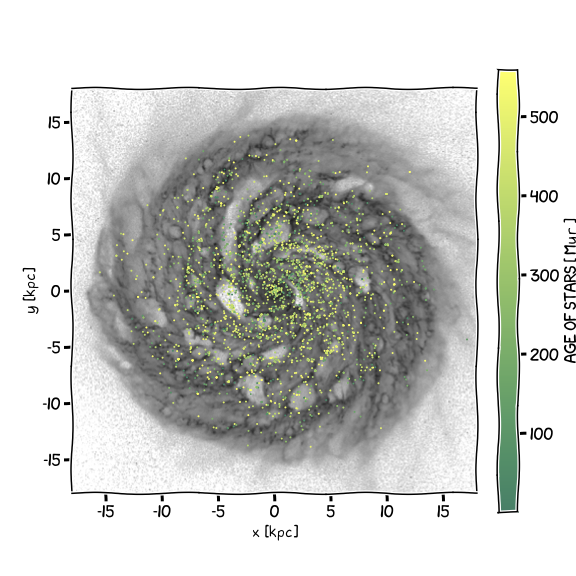
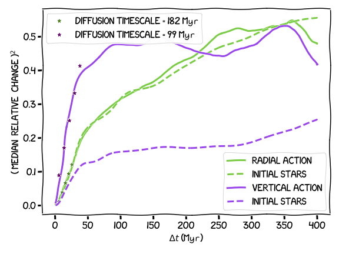
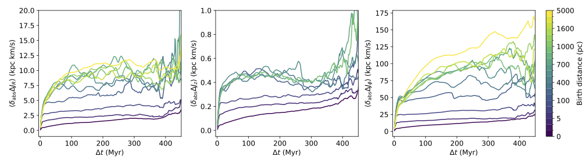
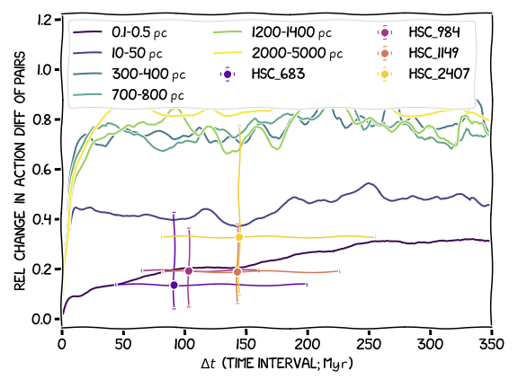

Arunima
Galactic archaeology · stellar dynamics · numerical simulations

About me
I am a PhD student at the Australian National University, working with Mark Krumholz and Mike Ireland in Galactic archaeology and stellar dynamics. I am broadly interested in how much we can infer about where stars were born from their present-day phase-space information.
Research
My main research focuses on understanding what present-day stellar orbits can tell us about their birth environments. I use high-resolution magnetohydrodynamic simulations of a Milky Way-like galaxy to study how stellar orbital actions evolve in a realistic, time-dependent Galactic disc, and what this implies for orbit reconstruction and identifying co-natal stellar populations.
I am also working on a barred Milky Way simulation to investigate the effects of the Galactic bar on action evolution. In parallel, I am involved in an observational project on the recent star formation history of the Scorpius–Centaurus association, combining new radial velocity measurements with Gaia astrometry and kinematic tools such as Chronostar. Getting a kinematic age for the subcomponent of Sco-Cen in which PDS70 exists can give us a model-independent age to use in planet formation models.
Selected interests
- Galactic archaeology and cluster reconstruction
- Stellar dynamics and orbit reconstruction (Actions)
- Magnetohydrodynamic simulations of disc and barred galaxies
- Star formation histories of nearby associations (e.g. Sco–Cen/UCL/PDS 70)
Code & projects
Most of my code and analysis lives on GitHub: github.com/aruuniima.
- Action evolution in time-dependent Milky Way-like discs – studying how orbital actions change in high-resolution MHD simulations.
- Sco–Cen component T kinematic ages – combining new radial velocities with Gaia astrometry and Chronostar to refine ages for the subgroup hosting PDS 70.




Link to my papers:
Contact
Email: arunima.arunima@anu.edu.au
GitHub: github.com/aruuniima